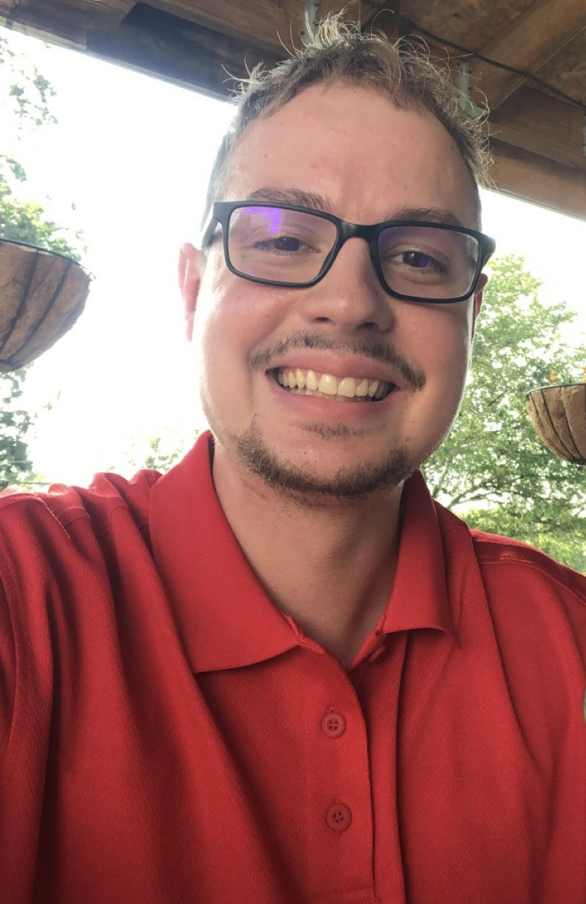

Kyle D. McColgan
Location

- Kyle McColgan
Git Hub, Coding Projects
South Saint Louis County
Saint Louis, Missouri 63128-1464, USA
- kdmbus21@gmail.com
- +1 314-660-5776 (mobile), kylem9334 (Discord)
Dedication note
To all the future problem solvers out there, may this website renew your passion and committment for finding elegant solutions to complex problems:
This website is dedicated to my family and represents the immeasurable strength of their love and unconditional support. None of this would be possible without them being there along with my friends showing me how to overcome challenges and embrace obstacles.
Mission statement
Main objective is to achieve my full potential through positive daily growth and experiencing life to its fullest extent possible, as well as provide an example for others to follow and demonstrate that nothing is impossible through hard work and consistency.
Career objectives include diversifying my resume through an array of professional experiences, as well as to develop a strong network of people with similar interests or not so similar interests.
Brief resume
::marker Walmart, Software Engineer, July 2021 - October 2022.